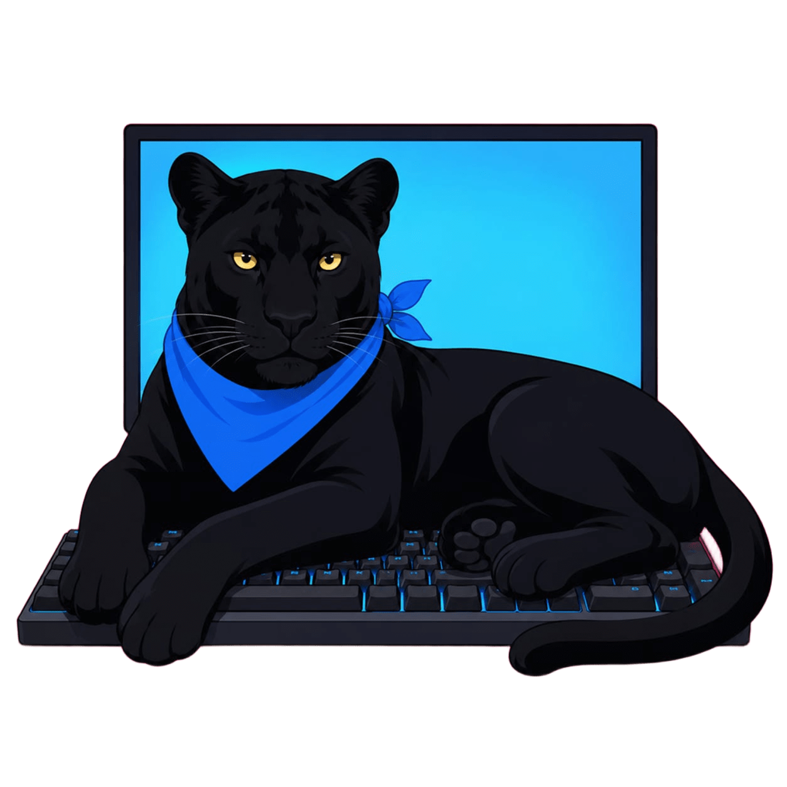
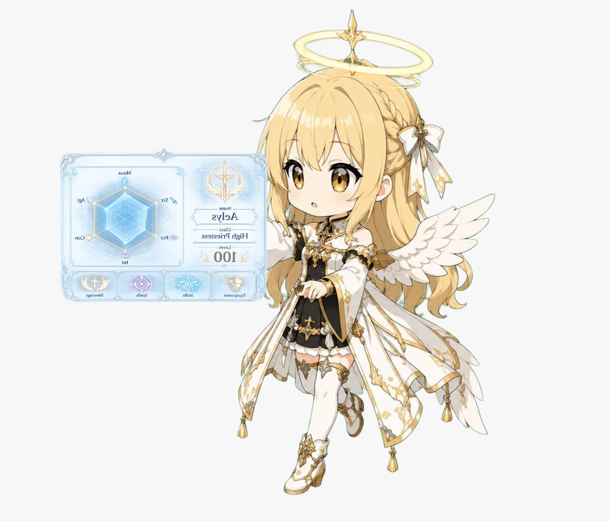

Construindo soluções reais atráves de código
Desenvolvedor focado em criar experiências digitais excepcionais, tornando ideias em realidade.

Projetos
Frontend
Backend
Banco de Dados
Ferramentas
- Comunicação Assertiva
- Foco em transmitir informações técnicas de forma clara e objetiva. Experiência em traduzir conceitos complexos para diferentes públicos, lapidada em palestras e mentorias.
- Trabalho em Equipe
- Atuação colaborativa focada em resultados comuns. Experiência prática na coordenação de grupos de monitores, garantindo alinhamento e suporte mútuo.
- Adaptabilidade Técnica
- Capacidade de transitar entre diferentes stacks e tecnologias conforme a necessidade do projeto, priorizando a lógica de solução sobre a ferramenta.
- Pensamento Estruturado (Solution First)
- Abordagem investigativa para entender a real dor do problema antes da codificação. Acredito que perguntar corretamente é o primeiro passo para uma entrega precisa.

Sobre mim
Olá! Sou Antonio Marcos, estudante de ADS com cerca de 3 anos de dedicação à programação, focado em construir soluções que aliam lógica estruturada e impacto real. Minha trajetória é marcada pela versatilidade: trago a disciplina e o rigor, com prazos que desenvolvi no setor administrativo industrial, somados à experiência de liderança e à comunicação clara que adquiri ao coordenar projetos de inclusão digital para idosos. Atualmente, foco em organizar e documentar meu ecossistema de projetos no GitHub, priorizando sempre a arquitetura e a qualidade da entrega final.
Destaques rápidos
- 🎓Cursando ADS (Unisanta)
- 🏭Experiência em ambiente corporativo/industrial
- 🤝Experiência em voluntariado de inclusão digital à 3ª idade